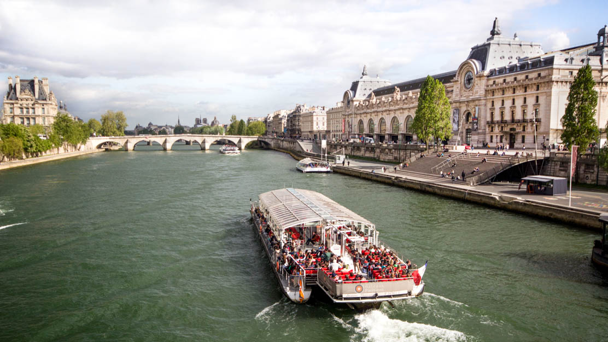
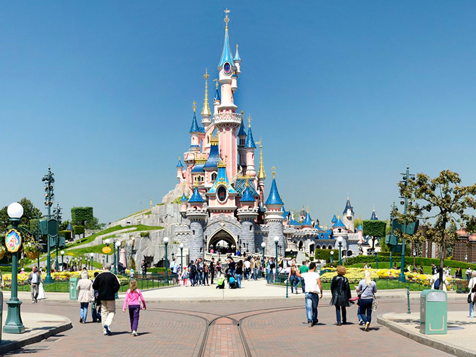
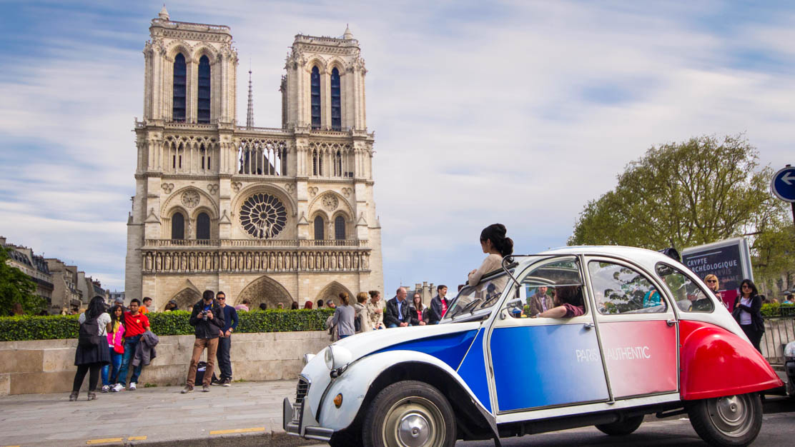

Symbole et monument incontournable de la capitale, la Tour Eiffel culmine à 325 m de hauteur pour un poids total de 10 100 tonnes, dont 7 300 tonnes pour la charpente m�tallique. R�alis�e en 2 ans, 2 mois et 5 jours, elle fut �rig�e � l�occasion de l�Exposition Universelle de 1889.
On peut y accéder par escalier ou par ascenseur : au 1er étage, entièrement réaménagé, retrouvez les boutiques; au 2ème, laissez-vous tenter par un repas gastronomique au tr�s c�l�bre restaurant Jules Verne, � 125 m au-dessus du sol. Enfin au 3�me �tage, c�toyez les nuages et profitez d�une vue exceptionnelle � 360� ! Table d'orientation située au 3ème étage de la Tour Eiffel.
Réservation en ligne sur www.tour-eiffel.fr ; ou par téléphone pour les individuels +33 (0) 8 92 70 12 39, pour les groupes +33 (0) 8 92 70 00 16.

Pour un moment romantique, offrez-vous une croisière sur la Seine accompagnée d'une coupe de champagne. Vous profiterez d'une vue superbe et pourrez prendre des photos incroyables de la tour Eiffel depuis le fleuve.

Consacrez une de vos nuits parisiennes au Moulin Rouge, dont la réputation n'est plus à faire. Enfilez votre plus belle tenue et rendez-vous au quartier de Pigalle pour rendre hommage au lieu de naissance du cancan.

Il faudrait neuf mois pour voir chacune des oeuvres exposées au musée du Louvre. Il faut choisir ! Un guide pourra vous emmener directement voir les �uvres les plus importantes et vous �viter ainsi pas mal de stress.

Plongez dans le grand luxe en explorant le splendide château de Versailles. Parcourez ses jardins à vélo ou visitez les appartements du roi, et n�oubliez pas de prendre quelques photos-souvenirs !

Pour un moment de divertissement inoubliable en famille, le royaume européen de la magie vous attend aux portes de la ville. Simplifiez-vous la vie en r�servant votre transport en plus de votre entr�e pour Disneyland Paris.

Les ossuaires souterrains de Paris abritent les restes de six millions de personnes. Surnommées "la plus grande tombe du monde", les catacombes de Paris sont sans aucun doute un endroit insolite � explorer !

Notre-Dame de Paris est l'un des premiers édifices construits avec des arc-boutants et s'impose de ce fait comme un incontournable pour les amateurs d�architecture.